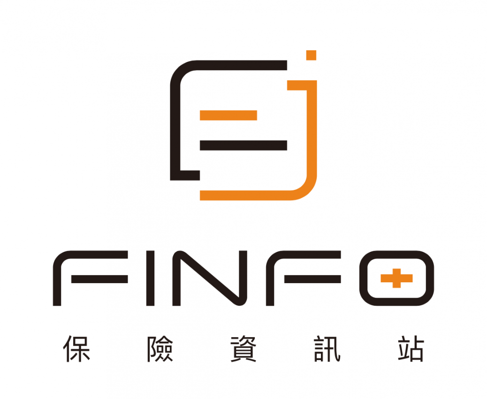

個人簡介
-
張宸瑜
- 性別 : 男
- 生日 : 1999/11/26
- 星座 : 射手座 ♐
- 興趣 : 彈吉他、攝影、打羽球、打籃球
- 電話 : 0900203004
- 學歷 : 國立暨南國際大學
- 電子信箱 : s107213003@mail1.ncnu.edu.tw
- Facebook : 張宸瑜
作品
- 吉他
- 攝影


推薦網站
1. Youtube YouTube是源自美國的影片分享網站，也是目前全球最大的影片搜尋和分享平臺，讓使用者上傳、觀看、分享及評論影片。 |
|
2. 衛生福利部疾病管制署 疾病管制署網站可以查詢到關於疾病防治的最新消息，還有通報、宣導、統計等查詢功能。 |
|
|  | 3. Finfo保險資訊站 Finfo保險資訊站可以幫你比較各保險公司的保險項目，讓你在保保險的時候有更明確的選擇。 |
4. 91譜 91譜有大量的吉他和弦譜，包括最新發行的歌曲也有，對於吉他表演者來說是一個好用的網站。 |